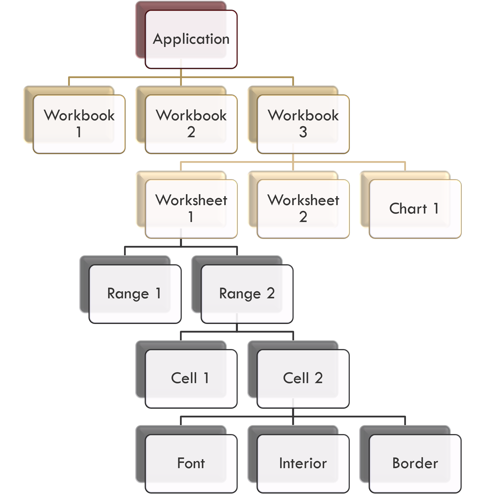
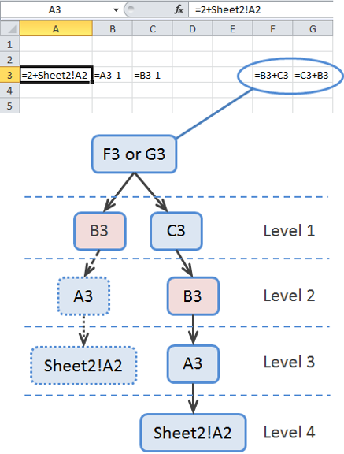

Excel Under the Hood#
Introduction: Peeking Behind the Spreadsheet Grid#
To most spreadsheet users, Microsoft Excel appears to be nothing more than a visual grid of rectangular boxes labeled with letters and numbers. You type a number into cell A1, enter a formula into cell B1, and watch a calculated result appear.
However, treating Excel as a passive visual grid limits your ability to build complex financial models or debug broken spreadsheets. To become an Excel power user—and to audit financial models effectively—you must understand how Excel operates programmatically under the hood.
Underneath its graphical interface, Microsoft Excel is an object-oriented software system governed by a strict hierarchy of data structures, properties, methods, and a sophisticated calculation engine.
1. The Excel Object Model#
In computer programming, developers organize complex software using objects.
An object is an entity that possesses two fundamental characteristics:
Properties (Attributes): Characteristics or data values that describe the object (e.g., a cell’s color, a sheet’s name, or a workbook’s file path).
Methods (Functions): Actions or operations that the object can perform (e.g., printing a worksheet, calculating a range, or saving a file).
The Object Hierarchy#
Excel is built entirely on a container-based Object Model. Smaller objects sit inside larger container objects in a strict hierarchy:
Application (Excel Software) \(\longrightarrow\) Workbook (File) \(\longrightarrow\) Worksheet (Tab) \(\longrightarrow\) Range (Cell or Selection)
+------------------------------------------------------------------------+
| EXCEL OBJECT HIERARCHY |
+------------------------------------------------------------------------+
| Application Object (The Excel Program Instance) |
| └── Workbooks Container (List of all open files) |
| └── ActiveWorkbook Object (e.g., "FinancialModel.xlsx") |
| └── Worksheets Container (List of tabs) |
| └── ActiveSheet Object (e.g., "Sheet1") |
| └── Range Object (e.g., Range("B5:D9")) |
| ├── Value Property (e.g., 1500.00) |
| ├── Formula Property (e.g., "=SUM(A1:A5)") |
| ├── NumberFormat Property (e.g., "$#,##0") |
| └── Interior / Font / Border Objects |
+------------------------------------------------------------------------+
Every single action you take in Excel—whether clicking a button, formatting a heading, or entering a formula—is translated by Excel into a command that either modifies an object’s property or executes an object’s method.


Fig. 12 Visualizing Excel Objects — Workbooks, Worksheets, Ranges, and Formatting Attributes#
2. The Range Object: The Fundamental Building Block#
While the Application and Workbook objects manage software files, the Range object is the most important object for data analysts.
Microsoft defines a Range as “a cell, a row, a column, or a selection of cells containing one or more contiguous blocks of cells.” Informally, a range is any single cell or group of cells on a worksheet.
Key Properties of the Range Object#
Every cell in your spreadsheet is a Range object with several crucial properties:
ValueProperty: The underlying data stored in the cell (e.g., the number42, the text'Microsoft Corp', or a calculated output). This is what you see displayed on screen.FormulaProperty: The mathematical equation or function stored inside the cell (e.g.,=A1+B1or=XLOOKUP(...)). If a cell contains a static value like100, itsFormulaproperty is simply'100'.NumberFormatProperty: Dictates how the cell’sValueis rendered visually on screen (e.g., displaying the raw value1250.5as Currency$1,250.50, Percentage125.1%, or Date2026-10-25).AddressProperty: The grid coordinates of the range (e.g.,$B$5or$A$1:$D$50).FontandInteriorObjects: Child objects that store visual formatting attributes, such as font size, bold status, text color, and fill color.
Note
Programming Connection: Visual Basic for Applications (VBA)
In Excel’s background macro language (VBA), altering a cell’s background color or entering a formula is written explicitly as object property assignments:
Range(“B5”).Value = 1500 Range(“B5”).NumberFormat = “$#,##0.00” Range(“C5”).Formula = “=B5 * 0.10”
3. How Excel Formulas Work: Transformations in Spreadsheets#
An Excel formula is stored in the Formula property of a Range object. When Excel executes the formula, it computes the result and assigns that result to the cell’s Value property.
Just like a SELECT statement in SQL transforms raw data columns on the fly, an Excel formula transforms inputs from precedent cells into a new output value.
Cell References#
Formulas perform calculations by referencing other Range objects. Excel supports four distinct ways to reference cells:
Relative References (
C13): The default reference type. Relative references are defined by their relative distance from the formula cell. When you copy or fill a relative formula down a column or across a row, the cell references shift automatically.Absolute References (
$C$13): Uses dollar signs ($) to lock both the column letter and row number. When copied to other cells, an absolute reference stays permanently fixed on cellC13.Mixed References (
C$13or$C13): Locks only the row (C$13) or only the column ($C13). Mixed references are essential when building two-dimensional financial matrices (e.g., sensitivity analysis tables).Structured References (
Table1[UnitPrice]): Used inside formal Excel Tables. Instead of cryptic cell coordinates likeC2:C500, structured references use explicit column names, making formulas readable and self-documenting.
Warning
The Auditor’s Perspective: The Power of F4 for Reference Locking
Inexperienced accountants manually type dollar signs ($) when building formulas. Excel power users toggle between Relative (A1), Absolute ($A$1), Mixed Row (A$1), and Mixed Column ($A1) instantly by pressing the F4 function key (or Command + T on Mac) while highlighting a cell reference inside the formula bar.
4. The Excel Calculation Engine & Dependency Trees#
Imagine a complex corporate financial model with 50 interconnected worksheets containing thousands of formulas. When you change a single assumption cell (e.g., increasing Sales Growth Rate from 5% to 7%), how does Excel know which formulas to recalculate, and in what order?
Excel does not evaluate cells in simple left-to-right or top-to-bottom order. Instead, Excel uses a sophisticated calculation engine driven by dependency trees.
Precedents and Dependents#
To manage calculations, Excel tracks two directional relationships for every cell:
Precedent Cells: Cells that are referred to by a formula. (If cell
B1contains=A1+1, cellA1is a precedent ofB1).Dependent Cells: Cells containing formulas that refer to other cells. (Cell
B1is a dependent ofA1).
The Dependency Tree#
Whenever a formula is entered or modified, Excel’s calculation engine scans the workbook and constructs an in-memory Dependency Tree. The dependency tree maps out the exact chain of execution, organizing formulas into sequential calculation “levels.”


Fig. 13 Excel Dependency Tree — Mapping Precedents and Dependents Across Calculation Levels#
When you edit a cell, Excel:
Identifies all dependents connected to that cell throughout the workbook.
Flags those dependent cells as “dirty” (needing recalculation).
Executes recalculation in exact topological order down the dependency tree—evaluating Level 1 precedents before Level 2 dependents.
Spreadsheet Auditing Tools#
In complex financial modeling, broken dependency chains or circular references (when a formula directly or indirectly refers to its own cell) will crash the calculation engine.
Excel provides built-in visual auditing tools on the Formulas ribbon:
Trace Precedents (
Ctrl + [): Draws blue arrows pointing to all cells that supply data to the active formula.Trace Dependents (
Ctrl + ]): Draws blue arrows pointing to all formulas that rely on the active cell.Remove Arrows: Clears visual audit arrows from the worksheet grid.
Summary Reference Checklist#
Understanding how Excel operates under the hood provides the technical foundation for everything we will build in Unit 4.
Concept / Object |
What It Is Under the Hood |
Analytical / Auditing Role |
|---|---|---|
|
The top-level Excel software instance. |
Manages global settings, open workbooks, and calculation modes. |
|
An individual spreadsheet file ( |
Contains worksheets, named ranges, and data connections. |
|
An individual tab within a workbook. |
Holds grid cells, pivot tables, and chart objects. |
|
A cell or contiguous selection of cells. |
Stores |
|
The equation stored inside a |
Transforms inputs from precedent cells into a calculated |
Dependency Tree |
Excel’s internal calculation queue. |
Ensures formulas evaluate in strict topological order based on precedents. |
Trace Precedents / Dependents |
Visual auditing tools in the Formulas ribbon. |
Exposes formula relationships and identifies logic errors in financial models. |